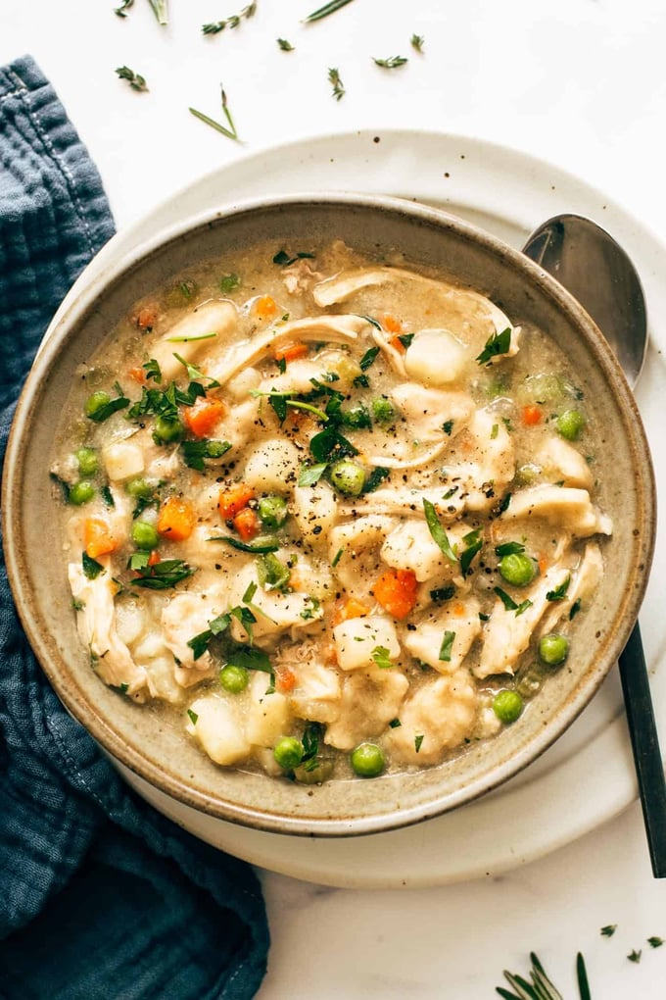

Instant Pot Chicken and Dumplings

Description
Hello! Let’s put a chopped-up trio of celery, carrots, and onions, potatoes, chicken, spices, and pre-made – yes, I said it – pre-made biscuits in the Instant Pot and call it dinner.
The bakery in my hometown was famous for their chicken and dumpling soup, so I’ve eaten a lot of chicken and dumplings in my life. Growing up, it was essential to know when chicken and dumpling day was,
and it was a need-to-get-there-early type situation so that you didn’t miss out.
Chicken and dumplings, in this very weeknight SOS-friendly version, is something between a stew and a soup – it’s just a bowl of humble, comforting, creamy goodness. In this case, loaded with potatoes, peas, chicken, biscuit-like dumplings, and nice and creamy
without cream (although, you can always add some if you want). The potatoes and biscuits share some of their starchiness to make the whole thing super cozy and rich without needing any additional dairy.
Ingredients
- mirepoix (a mix of chopped carrots, celery,
and onion that you can buy frozen or in the produce section to save time)
- chicken thighs
- potatoes
- pre-made biscuits
- peas
- chicken broth
- poultry seasoning
Steps
- Place all ingredients in the Instant Pot except the peas. Throw some fresh herbs in there if you have them – sage, thyme, etc. If not, don’t sweat! This is shortcut cooking.
Just turn on the Instant Pot and cook on high pressure for 7-10 minutes.
- After about 10 minutes of resting, use the “quick release” to let out the steam.
Gently break apart any pieces of biscuits that got stuck together with two forks.
- Pull out the chicken and shred it or chop it up.
Add it back in with the peas. Taste, season, and serve!